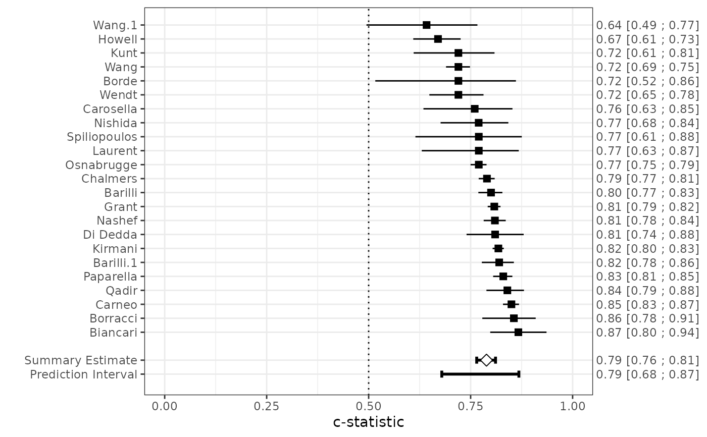

This function provides summary estimates for the concordance statistic, the total observed-expected ratio or the calibration slope. Where appropriate, data transformations are applied and missing information is derived from available quantities. Unless specified otherwise, all meta-analysis models assume random effects and are fitted using restricted maximum likelihood estimation with the metafor package (Viechtbauer 2010). Further, confidence intervals for the average performance are based on the Hartung-Knapp-Sidik-Jonkman method. When conducting a Bayesian meta-analysis, the R packages runjags and rjags must be installed.
Usage
valmeta(
measure = "cstat",
cstat,
cstat.se,
cstat.cilb,
cstat.ciub,
cstat.cilv,
sd.LP,
OE,
OE.se,
OE.cilb,
OE.ciub,
OE.cilv,
citl,
citl.se,
N,
O,
E,
Po,
Po.se,
Pe,
data,
method = "REML",
test = "knha",
verbose = FALSE,
slab,
n.chains = 4,
pars,
...
)Arguments
- measure
A character string indicating which summary performance measure should be calculated. Options are
"cstat"(meta-analysis of the concordance statistic) and"OE"(meta-analysis of the total observed-expected ratio). See `Details' for more information.- cstat
Optional vector with the estimated c-statistic for each valiation
- cstat.se
Optional vector with the standard error of the estimated c-statistics
- cstat.cilb
Optional vector to specify the lower limits of the confidence interval.
- cstat.ciub
Optional vector to specify the upper limits of the confidence interval.
- cstat.cilv
Optional vector to specify the levels of aformentioned confidence interval limits. (default: 0.95, which corresponds to the 95% confidence interval).
- sd.LP
Optional vector with the standard deviation of the linear predictor (prognostic index)
- OE
Optional vector with the estimated ratio of total observed versus total expected events
- OE.se
Optional vector with the standard errors of the estimated O:E ratios
- OE.cilb
Optional vector to specify the lower limits of the confidence interval for
OE.- OE.ciub
Optional vector to specify the upper limits of the confidence interval for
OE.- OE.cilv
Optional vector to specify the levels of aformentioned confidence interval limits. (default: 0.95, which corresponds to the 95% confidence interval).
- citl
Optional vector with the estimated calibration-in-the-large for each valiation
- citl.se
Optional vector with the standard error of the estimated calibration-in-the-large statistics
- N
Optional vector with the total number of participants for each valiation
- O
Optional vector with the total number of observed events for each valiation (if specified, during time
t.val)- E
Optional vector with the total number of expected events for each valiation (if specified, during time
t.val)- Po
Optional vector with the (cumulative) observed event probability for each valiation (if specified, during time
t.val)- Po.se
Optional vector with the standard errors of
Po.- Pe
Optional vector with the (cumulative) expected event probability for each validation (if specified, during time
t.val)- data
optional data frame containing the variables given to the arguments above.
- method
Character string specifying whether a fixed- or a random-effects model should be fitted. A fixed-effects model is fitted when using
method="FE". Random-effects models are fitted by setting method equal to one of the following:"REML"(Default),"DL","HE","SJ","ML","EB","HS","GENQ"or"BAYES". See 'Details'.- test
Optional character string specifying how test statistics and confidence intervals for the fixed effects should be computed. By default (
test="knha"), the method by Knapp and Hartung (2003) is used for adjusting test statistics and confidence intervals. Type '?rma' for more details.- verbose
If TRUE then messages generated during the fitting process will be displayed.
- slab
Optional vector specifying the label for each study
- n.chains
Optional numeric specifying the number of chains to use in the Gibbs sampler (if
method="BAYES"). More chains will improve the sensitivity of the convergence diagnostic, but will cause the simulation to run more slowly. The default number of chains is 4.- pars
A list with additional arguments. See 'Details' for more information. The following parameters configure the MCMC sampling procedure:
hp.mu.mean(mean of the prior distribution of the random effects model, defaults to 0),hp.mu.var(variance of the prior distribution of the random effects model, defaults to 1000),hp.tau.min(minimum value for the between-study standard deviation, defaults to 0),hp.tau.max(maximum value for the between-study standard deviation, defaults to 2),hp.tau.sigma(standard deviation of the prior distribution for the between-study standard-deviation),hp.tau.dist(prior distribution for the between-study standard-deviation. Defaults to"dunif"),hp.tau.df(degrees of freedom for the prior distribution for the between-study standard-deviation. Defaults to 3). Other arguments aremethod.restore.c.se(method for restoring missing estimates for the standard error of the c-statistic. Seeccalcfor more information),model.cstat(The likelihood/link for modeling the c-statistic; see "Details"),model.oe(The likelihood/link for modeling the O:E ratio; see "Details"),seed(an integer to indicate the random seed).- ...
Additional arguments that are passed to rma or runjags (if
method="BAYES").
Value
An object of class valmeta with the following elements:
- "data"
array with (transformed) data used for meta-analysis, and method(s) used for restoring missing information.
- "measure"
character string specifying the performance measure that has been meta-analysed.
- "method"
character string specifying the meta-analysis method.
- "model"
character string specifying the meta-analysis model (link function).
- "est"
summary estimate for the performance statistic. For Bayesian meta-analysis, the posterior median is returned.
- "ci.lb"
lower bound of the confidence (or credibility) interval of the summary performance estimate.
- "ci.ub"
upper bound of the confidence (or credibility) interval of the summary performance estimate.
- "pi.lb"
lower bound of the (approximate) prediction interval of the summary performance estimate.
- "pi.ub"
upper bound of the (approximate) prediction interval of the summary performance estimate.
- "fit"
the full results from the fitted model.
- "slab"
vector specifying the label of each study.
Details
Meta-analysis of the concordance statistic
A summary estimate for the concorcance (c-) statistic can be obtained by specifying measure="cstat".
The c-statistic is a measure of discrimination, and indicates the ability of a prediction model to
distinguish between patients developing and not developing the outcome. The c-statistic typically ranges
from 0.5 (no discriminative ability) to 1 (perfect discriminative ability). When missing, the c-statistic
and/or its standard error are derived from other reported information.
See ccalc for more information.
By default, it is assumed that the logit of the c-statistic is Normally distributed within and across studies
(pars$model.cstat = "normal/logit"). Alternatively, it is possible to assume that the raw c-statistic
is Normally distributed across studies pars$model.cstat = "normal/identity".
Meta-analysis of the total observed versus expected ratio
A summary estimate for the total observed versus expected (O:E) ratio can be
obtained by specifying measure="OE". The total O:E ratio provides a
rough indication of the overall model calibration (across the entire range
of predicted risks). When missing, the total O:E ratio and/or its standard
error are derived from other reported information. See oecalc
for more information.
For frequentist meta-analysis, within-study variation can either be modeled
using a Normal (model.oe = "normal/log" or
model.oe = "normal/identity") or a Poisson distribution
(model.oe = "poisson/log").
When performing a Bayesian meta-analysis, all data are modeled using a
one-stage random effects (hierarchical related regression) model.
In particular, a binomial distribution (if O, E and
N is known), a Poisson distribution (if only O and
E are known) or a Normal distribution (if OE and
OE.se or OE.95CI are known) is selected separately for
each study.
Bayesian meta-analysis
All Bayesian meta-analysis models assume the presence of random effects. Summary estimates are based on the posterior mean. Credibility and prediction intervals are directly obtained from the corresponding posterior quantiles.
The prior distribution for the (transformed) performance estimate is modeled
using a Normal distribution, with mean hp.mu.mean (defaults to 0)
and variance hp.mu.var (defaults to 1000).
For meta-analysis of the total O:E ratio, the maximum value for
hp.mu.var is 100.
By default, the prior distribution for the between-study standard deviation
is modeled using a uniform distribution (hp.tau.dist="dunif"),
with boundaries hp.tau.min and hp.tau.max. Alternative choices
are a truncated Student-t distribution (hp.tau.dist="dhalft") with a
mean of hp.tau.mean, a standard deviation of hp.tau.sigma and
hp.tau.df degrees of freedom. This distribution is again restricted
to the range hp.tau.min to hp.tau.max.
Note
The width of calculated confidence, credibility and prediction
intervals can be specified using level in the pars argument
(defaults to 0.95).
References
Debray TPA, Damen JAAG, Snell KIE, Ensor J, Hooft L, Reitsma JB, et al. A guide to systematic review and meta-analysis of prediction model performance. BMJ. 2017;356:i6460. doi:10.1136/bmj.i6460
Debray TPA, Damen JAAG, Riley R, Snell KIE, Reitsma JB, Hooft L, et al. A framework for meta-analysis of prediction model studies with binary and time-to-event outcomes. Stat Methods Med Res. 2019;28:2768--86. doi:10.1177/0962280218785504
Riley RD, Tierney JF, Stewart LA. Individual participant data meta-analysis: a handbook for healthcare research. Hoboken, NJ: Wiley; 2021. ISBN: 978-1-119-33372-2.
Steyerberg EW, Nieboer D, Debray TPA, van Houwelingen HC. Assessment of heterogeneity in an individual participant data meta-analysis of prediction models: An overview and illustration. Stat Med. 2019; 38:4290--309. doi:10.1002/sim.8296
Viechtbauer W. Conducting Meta-Analyses in R with the metafor Package. Journal of Statistical Software. 2010; 36. doi:10.18637/jss.v036.i03
See also
ccalc to calculate concordance statistics
and corresponding standard errors, oecalc to calculate the
total O:E ratio and corresponding standard errors,
plot.valmeta to generate forest plots
Examples
######### Validation of prediction models with a binary outcome #########
data(EuroSCORE)
# Meta-analysis of the c-statistic (random effects)
fit <- valmeta(cstat=c.index, cstat.se=se.c.index, cstat.cilb=c.index.95CIl,
cstat.ciub=c.index.95CIu, cstat.cilv=0.95, N=n, O=n.events,
slab=Study, data=EuroSCORE)
plot(fit)

# Nearly identical results when we need to estimate the SE
valmeta(cstat=c.index, N=n, O=n.events, slab=Study, data=EuroSCORE)
#> Summary c-statistic with 95% confidence and (approximate) 95% prediction interval:
#>
#> Estimate CIl CIu PIl PIu
#> 0.7889020 0.7650864 0.8109000 0.6818676 0.8669518
#>
#> Number of studies included: 23
# Two-stage meta-analysis of the total O:E ratio (random effects)
valmeta(measure="OE", O=n.events, E=e.events, N=n, slab=Study, data=EuroSCORE)
#> Summary Total O:E ratio with 95% confidence and (approximate) 95% prediction interval:
#>
#> Estimate CIl CIu PIl PIu
#> 1.1075973 0.8998973 1.3632352 0.4295250 2.8561122
#>
#> Number of studies included: 23
valmeta(measure="OE", O=n.events, E=e.events, data=EuroSCORE)
#> Summary Total O:E ratio with 95% confidence and (approximate) 95% prediction interval:
#>
#> Estimate CIl CIu PIl PIu
#> 1.1059784 0.8990028 1.3606056 0.4316383 2.8338269
#>
#> Number of studies included: 23
valmeta(measure="OE", Po=Po, Pe=Pe, N=n, data=EuroSCORE)
#> Summary Total O:E ratio with 95% confidence and (approximate) 95% prediction interval:
#>
#> Estimate CIl CIu PIl PIu
#> 1.1230955 0.9212978 1.3690944 0.4549877 2.7722586
#>
#> Number of studies included: 23
if (FALSE) {
# One-stage meta-analysis of the total O:E ratio (random effects)
valmeta(measure="OE", O=n.events, E=e.events, data=EuroSCORE, method="ML",
pars=list(model.oe="poisson/log"))
# Bayesian random effects meta-analysis of the c-statistic
fit2 <- valmeta(cstat=c.index, cstat.se=se.c.index, cstat.cilb=c.index.95CIl,
cstat.ciub=c.index.95CIu, cstat.cilv=0.95, N=n, O=n.events,
data=EuroSCORE, method="BAYES", slab=Study)
# Bayesian one-stage random effects meta-analysis of the total O:E ratio
# Consider that some (but not all) studies do not provide information on N
# A Poisson distribution will be used for studies 1, 2, 5, 10 and 20
# A Binomial distribution will be used for the remaining studies
EuroSCORE.new <- EuroSCORE
EuroSCORE.new$n[c(1, 2, 5, 10, 20)] <- NA
pars <- list(hp.tau.dist="dhalft", # Prior for the between-study standard deviation
hp.tau.sigma=1.5, # Standard deviation for 'hp.tau.dist'
hp.tau.df=3, # Degrees of freedom for 'hp.tau.dist'
hp.tau.max=10, # Maximum value for the between-study standard deviation
seed=5) # Set random seed for the simulations
fit3 <- valmeta(measure="OE", O=n.events, E=e.events, N=n, data=EuroSCORE.new,
method="BAYES", slab=Study, pars=pars)
plot(fit3)
print(fit3$fit$model) # Inspect the JAGS model
print(fit3$fit$data) # Inspect the JAGS data
}
######### Validation of prediction models with a time-to-event outcome #########
data(Framingham)
# Meta-analysis of total O:E ratio after 10 years of follow-up
valmeta(measure="OE", Po=Po, Pe=Pe, N=n, data=Framingham)
#> Warning: 8 studies with NAs omitted from model fitting.
#> Summary Total O:E ratio with 95% confidence and (approximate) 95% prediction interval:
#>
#> Estimate CIl CIu PIl PIu
#> 0.5781061 0.4400900 0.7594053 0.1935434 1.7267794
#>
#> Number of studies included: 16